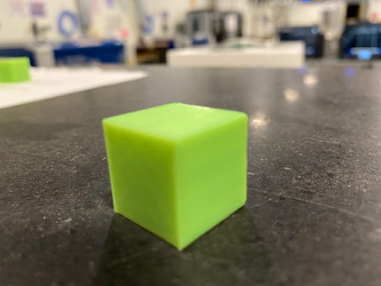

Assignment 1: Modeling and Laser Cutting
This was my first experience using CAD software. My goals were to design a Rhino model of an object to be laser cut 30 times on cardboard and then press fit into a shape that could withstand "light shaking".
Assignment 2: Parametric Modeling with Grasshopper
Here I created a parametric model using a Grasshopper definition, exported to Rhino and baked the shape, then laser cut on cardboard and clipped together a new form.
Assignment 3: Getting Started with 3D Printing
For this project I assembled a 3D printer, then ran a set of test prints on different shapes of varying configurations to build familiarity with the printing process, including slicer software settings, calibration, and technique.
Assignment 4: Subtractive Manufacturing

This project involved further exploration into 3D printing. I set out to design a box with some kind of joining method such as fingerjoints/boxjoints, tabs, etc., that could be assembled with a gap-free, tight fit.
Assignment 5: Get Meshy! And Lamps!
Here I embark on a journey to learn about and experiment with meshes, and then using various digital fabrication techniques, use those learnings to create a lamp!